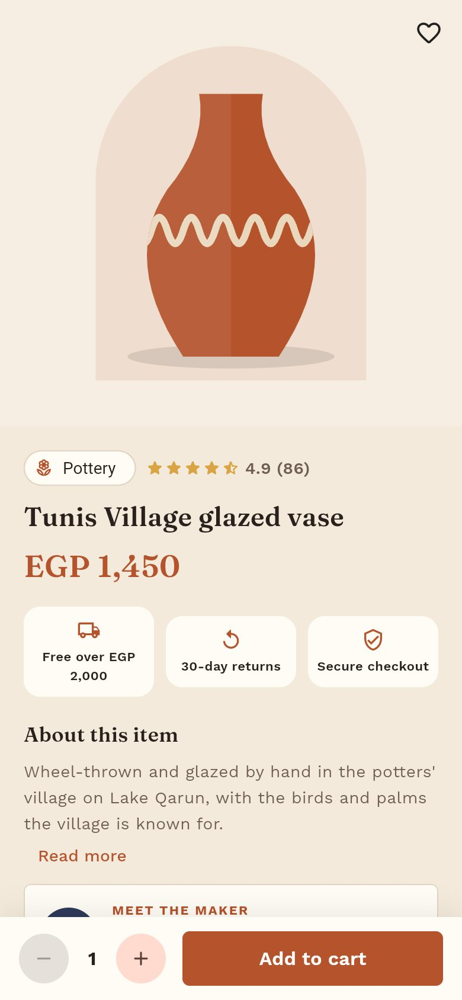
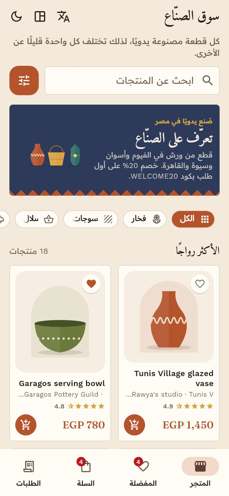

Handmade in Egypt
Pottery, weaving and lamps, straight from the workshop.
A Flutter store for Egyptian crafts. Every piece names the workshop and town it comes from, and the whole app works in English and Arabic, on phones and on the web.

Handmade in Egypt
A Flutter store for Egyptian crafts. Every piece names the workshop and town it comes from, and the whole app works in English and Arabic, on phones and on the web.
The catalogue follows real Egyptian craft traditions. The workshops in the demo are made up; the towns and their crafts are not.
Glazed pottery from the potters' village on Lake Qarun, Fayoum.
Cotton and linen woven on wooden looms in Sohag.
Coiled palm-frond baskets and beadwork from Nubian Aswan.
Pierced brass lanterns and engraved copper in old Cairo.
Built like a real store, with the details that make one trustworthy.
Search, six craft categories, sorting and a grid that adapts from phone to desktop.
Each piece shows its workshop and town, with art drawn in code in one consistent style.
Saved on the device with Hive, with promo codes and free shipping over EGP 2,000.
Address, phone and payment steps, then an order history with each order's status.
Revenue, orders, best sellers and sales by category, from the same data.
Full right-to-left layout with Fraunces and Amiri for headings, Work Sans and Readex Pro for text.



The catalogue is published with this site, so the app loads it live and falls back to the last saved copy, then a bundled one, when offline.